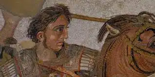
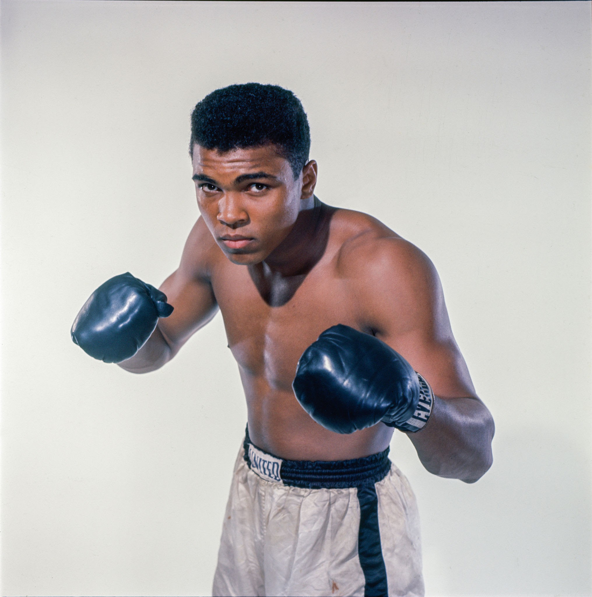

Alexander III of Macedon (Ancient Greek: Ἀλέξανδρος, romanized: Aléxandros; 20/21 July 356 BC – 10/11 June 323 BC), most commonly known as Alexander the Great, was a king of the ancient Greek kingdom of Macedon.
He succeeded his father Philip II to the throne in 336 BC at the age of 20 and spent most of his ruling years conducting a lengthy military campaign throughout Western Asia, Central Asia, parts of South Asia, and Egypt.
By the age of 30, he had created one of the largest empires in history, stretching from Greece to northwestern India.
He was undefeated in battle and is widely considered to be one of history's greatest and most successful military commanders.
Read me
April 30,2025
By: Ali mohammed

Muhammad Ali born Cassius Marcellus Clay Jr.; January 17, 1942 – June 3, 2016) was an American professional boxer and social activist.
A global cultural icon, widely known by the epithet "The Greatest", he is frequently cited as the greatest heavyweight boxer of all time.
He held the Ring magazine heavyweight title from 1964 to 1970, was the undisputed champion from 1974 to 1978, and was the WBA and Ring heavyweight champion from 1978 to 1979.
In 1999, he was named Sportsman of the Century by Sports Illustrated and the Sports Personality of the Century by the BBC.
Read more
April 30,2025
By: Ali mohammed